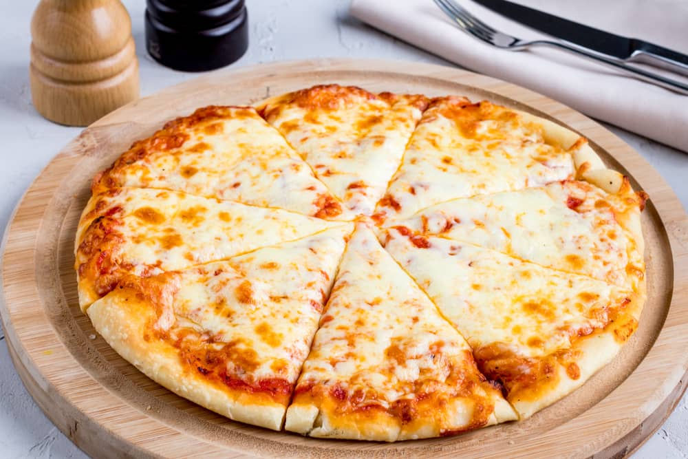

Home
Cheese Pizza Recipe

Description
I love this recipe it's so good. Yum yum yum!
A recipe passed down for generations.
Ingredients:
For the dough:
- 1 cup warm water
- 2 tsp active dry yeast
- 1 tbsp honey
- 3 cups all-purpose flour
- 1/2 tsp salt
- 1 tbsp olive oil
- 1 tsp olive oil additional
For the toppings:
- 3 tbsp softened unsalted butter
- 4 cloves medium garlic minced
- 1 cup mozzarella cheese shredded
- 1 cup white cheddar cheese shredded
- 1 cup Monterey Jack cheese shredded
- 1/4 cup Parmesan cheese freshly grated
- 1/4 cup chopped fresh parsley optional
Steps
Homemade Dough:
- In a large bowl or mixer, combine the water, honey , and yeast. Let the dough rest for 10 minutes until yeast starts to form.
- Add salt, flour, and 1 tbsp olive oil. Mix well until the dough pulls away from the bowl.
- Knead the dough for 10 minutes, manually.
- Form the dough into a bowl. Cover the dough with the remaining olive oil, place back into the bowl, and cover with a damp towel. Place in a warm area and let the dough rise for about 45 minutes.
Making the pizza:
- Preheat oven to 450°F. If you have a pizza pan, lightly oil it with olive oil. Otherwise, you can use a sheet of parchment paper placed on top of the baking pan or cooling rack.
- Flatten the dough and lay it on top of the pizza pan or baking rack with parchment paper.
- In a mixing bowl, combine the softened butter and garlic. Spread it evenly on the pizza dough.
- Sprinkle all the cheeses, evenly, except the parmesan.
- Bake for 13 to 15 minutes until the crust is golden brown. Sprinkle with fresh parmesan and parsley.
Notes
You can also use store-bought pizza dough. You can also add tomato-based sauce after spreading the garlic butter.